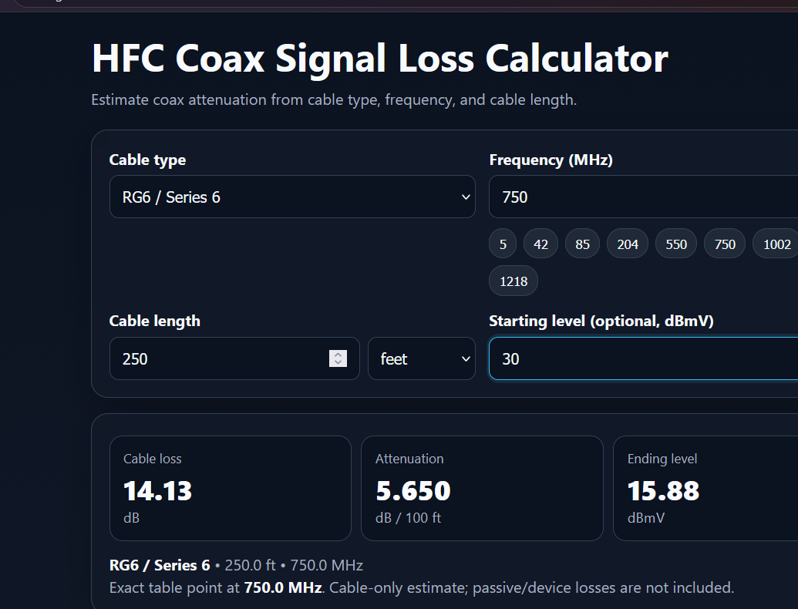

/ RF & BROADBAND
HFC Signal-Loss Calculator.
A web-based tool for estimating coaxial attenuation using frequency, cable type, and length.

/ LIVE APPLICATION
Try the calculator
Explore the original, fully functional HFC calculator right here. Change the coax type, frequency, length, and optional starting level to calculate attenuation and predicted ending level.
Why I built it
RF attenuation varies with frequency, cable construction, and run length. I wanted a practical way to explore those relationships.
My approach
Built a browser-based calculator supporting RG-6, RG-59, RG-11 and larger hardline cable types, with frequency- and length-based inputs.
What it demonstrates
This project reflects practical problem solving, independent learning, and applying technical concepts to working systems or prototypes. Its status is listed above so the scope of completed work is clear.
Project gallery
Screenshots captured from the working calculator, showing attenuation and optional starting-level calculations.
../../assets/hfc-calculator-01.png, -02.png, etc.